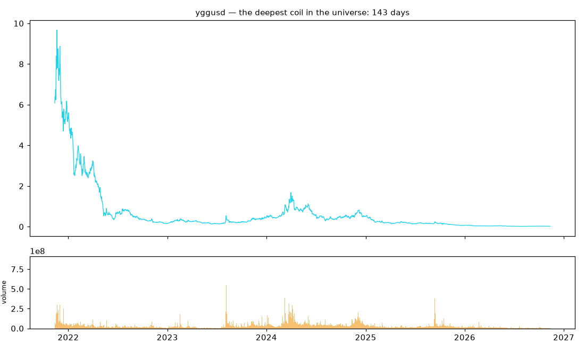
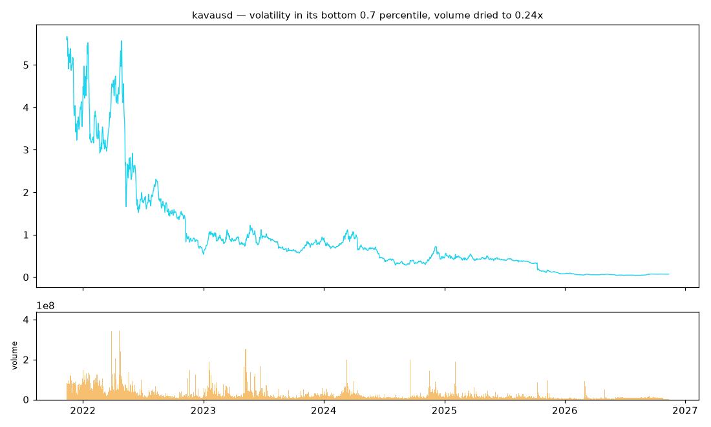
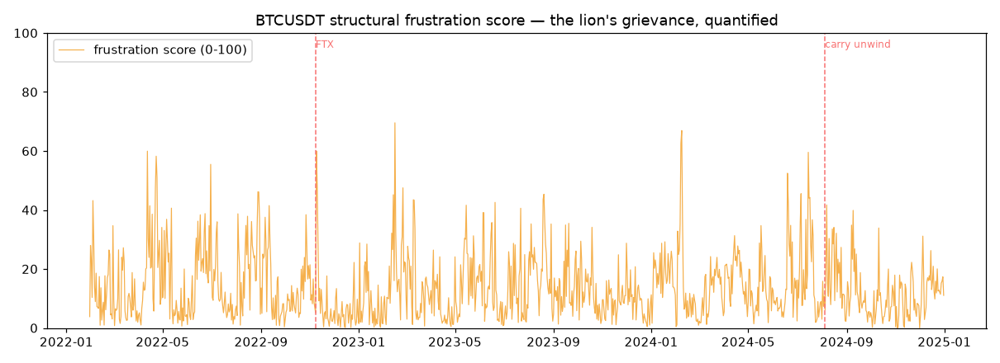

Salient.
One primary question (premise v2): out of the whole universe of markets, WHAT has become structurally primed to make the next significant move? WHEN is the supporting clock. WHICH WAY is refused by measurement.
Why WHAT outranks WHEN: knowing which market is the coiled spring makes the significant move actuarially inevitable across the cycle — no death dated, death certain — and the trade then needs no daily probabilities, only the capital to survive the wait. This is why 99.9999% lose: they trade probabilities in everything instead of inevitabilities in one thing. The lion does not strike at random; his frustration has been building for weeks, and the information was never in his muscles one second before the strike — it was in everything that happened to him before the show.
One discipline: adversarial falsification. Every claim is declared with its kill line — the specific result that would end it — before it is tested. A claim that cannot fail is not a claim; it is marketing. When a claim dies, the dead mechanism is named, and no pivot to a nearby surviving claim is permitted.
One honest state: the daily-resolution program is closed — its central claim was falsified on both instruments by four independent kill lines. The next experiment (the same claim, re-tested at full order-book resolution) is fully specified with pre-declared kill lines and is blocked solely on procurement of full-depth L2 data, which must pass a verification gate before anything runs. The repository is frozen in a holding pattern.
Contents of this site
1. The Salient Market Hypothesis
The axioms, the measured mechanism, and the certainty–timing–direction triangle — below on this page.
2. The falsification record
Every claim, its kill lines, and its verdict — including the full C1 post-mortem: how compression died as a volatility artifact, and why that death forces the L2 resolution test.
3. Data & machinery
The gated architecture — ingestion, the L2 verification gate, the event clock, purged cross-validation with embargo, the Cox hazard harness — and the dry run on 8.8 million real trades.
4. The knowledge base
Thirteen books studied one at a time — where the ideas come from — and the bridge from each book layer to the claims it seeded.
Part I — The Salient Market Hypothesis (SMH)
SMH is a direct replacement for Elliott Wave: it keeps what Elliott got right (impulse/correction alternation, scale self-similarity, crowd footprints), discards what Elliott got wrong (the fixed 5-3 cage, Fibonacci targets, unfalsifiability — any count can be recounted), and adds the dimension Elliott never had: time. State instead of count. Clock instead of prophecy. Calibration instead of belief.
The six axioms (the unconditional laws)
- Volatility persists, then mean-reverts — the clock itself.
- Tails are heavy — thresholds live in sigma units, never points.
- Autocorrelation has horizon structure — a directional prior exists only inside trend states.
- Impact is concave in volume — a significant event must be confirmed by volume (effort vs result).
- Events self-excite — hazard is state-dependent, never constant.
- Every edge decays — every rule carries a forward score and a decay watch.
Not on the list, by measurement: the direction of the next impulse at a chosen time.
The mechanism: the salience gradient
The measurable core of SMH: markets in a compressed, quiet state have a materially higher conditional probability of a significant move within a fixed horizon than the unconditional climatology. Measured on the weekly index universe (design-sample):
| Measurement | Result | Caveat |
|---|---|---|
| Compression salience: P(significant week ≤ 12 weeks) | 0.639 vs climatology 0.437 — disjoint bands | design-sample |
| Pre-scored walk-forward forecast (Brier) | 0.2374 vs climatology 0.2642 (skill +0.101) | design-sample |
| The crash-zone long rule (206 episodes) | median net +1.69% / 4 weeks, 57.3% positive, dual-split gate pass | design-sample |
| Replication on 11 untouched global indexes | +3.07% median, 71.4% positive | natural holdout |
The certainty–timing–direction triangle
A public rule that is certain, timed, and directional cannot exist: anyone who sees it trades it, and the event no longer happens as forecast. So the claims are separated, and no single model may answer two:
- CERTAINTY lives at the distribution (the six laws).
- PROBABILITY lives at the event (conditional rates by state).
- HAZARD lives at the timing (the clock).
- DIRECTION is refused by measurement — the 0.505 boundary. Direction, if it ever exists, must come from data that study did not use: intraday L2, order flow, queue dynamics.
The insight, stated plainly: WHAT is the whole game
Everything this programme has measured since the premise changed points at one conclusion: identifying WHAT is primed is not a refinement of timing — it is a different and superior kind of knowledge. A timing edge multiplies small probabilities; a WHAT edge, even one held rarely, compounds inevitabilities. The evidence now stands on four legs, each measured, each with its honest boundary:
- The coil candidates: 39 deep coils in the universe, all but two of them crypto; crypto coils resolve with a median |10-day move| of 9.3% and a >4σ day in 37.5% of exits — the state is common, and its resolutions are violent.
- The frustration engine: the structural trap score caught FTX twelve days early (38.4 vs its own p90 of 28.3) — the cause layer, quantified, anticipated an internal unwind. Its boundary is measured too: exogenous macro shocks (Aug 2024) show no internal trap.
- The genesis signature: the all-time high of 29.2% of launched pairs still sits in their first 90 days — four times the random-window null. The start contains the extreme that still stands; those who knew the WHAT were there from the beginning.
- The case file: before cfxusd's +1,100%, gasusd's +907%, hbarusd's +650%, and — half-formed — XRP's +432%, the primed signature was measurable at the last quiet day; before the terminal collapses, the parabolic blow-off was measurable. ZEC's +513% marks the honest boundary: momentum moves exist that carry no coil, and no honest framework claims them.
The remaining question is the only one that matters, and it is C7: across the whole panel, does the primed state realize significant moves above climatology — or is "primed" just "quiet" wearing a costume, the vol-tautology ghost that killed the daily timing layer? The kill lines are declared. The candidates are named. WHAT comes first; WHEN is the clock on the wall; the L2 data, when it passes the gate, is only the trigger that tells us the day.
The WHAT premise (v2) — and the first clue scan
The main premise of the Salient Market Hypothesis, restated by directive: the object of prediction is not the timing of a move in a single instrument but the identification, across the whole universe, of the one that has become structurally primed. This is now the programme's primary claim — C7, cross-sectional priming — with three pre-declared kill lines: (1) the primed-decile realization rate's CI overlaps climatology; (2) the effect survives only on synthetic-volume pairs; (3) the ranking's information vanishes once the volatility level is conditioned on — the vol-tautology ghost that killed C1. The honest restatement is binding: "surety" cannot be claimed (a claim that cannot fail is marketing); what can be measured is conditional probability approaching certainty as the horizon lengthens, with the drawdown constraint of the undated wait.
The clue scan — every chart, price and volume, before building anything
The full visual record — every candidate chart, the frustration scores, the case file, and the caveats — lives in the clue dossier.
Before building the priming score, the directive was to look at every chart, starting from daily price and volume. 204 series scanned (all causal variables, computed at the latest bar): position in the 252-day range, realized-vol percentile within each series' own 3-year history, consecutive days in the lowest volatility tercile (coil depth), effort-vs-result (volume per unit of price displacement — absorption), recent-vs-trailing volume, and stretch.
The deepest coils found (descriptive candidates, not evidence — scanning 204 series for extremes finds extremes by construction; the multiplicity warning is binding and C7's kill lines have not faced data):
| Series | Coil depth (days) | Vol percentile | Range position | Effort-vs-result | Volume ratio |
|---|---|---|---|---|---|
| yggusd | 143 | 10.1 | 0.12 | 3,685 | 0.74 |
| ordiusd | 65 | 9.4 | 0.17 | 3,655 | 0.51 |
| flrusd | 53 | 7.7 | 0.02 | 1,107 | 1.09 |
| solusd | 41 | 8.7 | 0.35 | 1,007,265 | 0.72 |
| kavausd | 40 | 0.7 | 0.85 | 7,405 | 0.24 |
| kef | 33 | 2.2 | 0.46 | 11.9 | 1.47 |
The per-class verdict: the unique clues are in crypto, exactly as predicted
The directive said the most unique clues would come from crypto — the least predictable, most informative class, the one that moves in ways that defy normal Elliott Wave structure. The scan measured it: crypto is the only class that produces deep coils at scale, and it is the only class whose coils resolve violently — a coiled spring that releases in a single tear rather than an orderly five-wave impulse.
| Class | Series | Deep coils (≥20d) | Median |10-day move| after coil exit | Coil exits containing a >4σ day |
|---|---|---|---|---|
| Crypto | 160 | 37 of 39 in the whole universe | 9.27% | 37.5% |
| Indexes | 20 | 0 | 2.13% | 11.8% |
| Commodities | 24 | 2 | 2.74% | 13.4% |
Read carefully: this is the descriptive signature of the WHAT premise — a crypto coil is not a quiet index drifting sideways; it is a compressed spring whose historical resolutions move four times as far as an index coil and contain a beyond-4-sigma day more than a third of the time. That is the "defying normal EW" behavior, operationalized: the release does not unfold in orderly waves, it detonates. All 12 top primed-score candidates are crypto; the deepest coils right now are yggusd (143 days), ordiusd (65), flrusd (53 — pinned at 2% of its yearly range), solusd (41), and kavausd (40, volume dried to 0.24× its trailing median). Candidates, not claims — C7's kill lines have not faced data.
Of 204 series, 39 sit in a deep coil (≥ 20 days in their lowest
volatility tercile) and 88 in the bottom tercile. The full table is
committed at paper/research/clue_scan/clue_scan_table.csv; the
top charts are below. What happens next is not a trade and not a claim: C7's
panel test must be specified (how many symbols, how many years, the
priming-score definition fixed in advance) before the kill lines face the
data — because a clue that proves true is found once in a lifetime, and the
only way to know it is true is to have declared, in advance, how it could
have been false.


The epistemic contract
Eight rules govern every number on this site:
- Never "prove." Every claim is a conditional probability with a confidence interval and a stated sample size.
- WHEN, WHICH WAY, and HOW MUCH are separate questions; no single model answers two.
- Labels are computable at the decision moment using only data timestamped strictly before it.
- Direction never comes from price-derived features. A study of n=15,386 directional episodes measured P(up) = 0.505 [0.497, 0.513] from weekly compression-state features — a coin flip. That boundary is binding on everything downstream.
- Kill lines are declared before testing and never moved after.
- A failed test names the dead mechanism; no pivoting.
- If it cannot be tested with available data, say so and stop — no silent proxy substitution.
- One instrument survives before any panel is attempted.
The structural inevitability engine — the lion's grievance, quantified
Per the builder directive: the L2 data is the trigger; the structural data is the cause. Before any L2 hazard model, the frustration was quantified from the free structural archives — funding rates, open interest (1,096 daily metric files), and futures-spot basis — 1,067 strictly-aligned daily observations for BTCUSDT (2022-01-30 → 2024-12-31), with the alignment kill line enforced by assertion (raise on any gap, never interpolate). The three pre-declared frustration metrics: funding trap (extreme negative funding z-score = short-squeeze fuel), OI divergence (flat price + rising open interest = the spring coiling), and basis extreme (contango/backwardation that must revert). Frustration Score = 0.4/0.4/0.2 weighted, 0–100, declared before the retrospective was computed.
The retrospective verdict, split exactly as the pre-declared kill line demands: before FTX (Nov 8, 2022) the score spiked — 38.4 on Oct 27, twelve days early, above its own 90th percentile (28.3). Before the carry unwind (Aug 5, 2024) it did not — peak 15.8 vs the same threshold. The kill line fires for that event, and the dead mechanism is named, not pivoted around: an internal positioning trap did not precede an external macro shock. The yen-carry unwind hit crypto from outside; the lion was not frustrated, the circus caught fire. The honest scope of the structural trap theory after this test: it predicts internal unwinds (FTX-shaped events), and it is falsified as an unconditional crash predictor. Liquidation levels: no free historical source exists — blocked-on-data, not proxied.

The genesis scan — the start affects the future
Directive: look at the earliest charts of the USD pairs — those who knew the WHAT were there from the start. The honest data boundary first: all panel CSVs share a common export window starting 2021-11-12, so pairs that existed earlier have no listing-era data here. But 24 pairs launched inside the window, and for those the first bars are the real earliest charts.
The finding: the all-time high of the entire available history still sits inside the first 90 days for 29.2% of launched pairs — versus a random-window null of 7.2%. Four times the baseline. Seven pairs (glmrusd, mumuusd, mantausd, bomeusd, ethfiusd, slerfusd, notusd — mostly 2024 launches) never again came near their launch-window high; several now trade at 1–8% of it. The mirror image exists too: opusd sits 192× above its genesis range, wldusd 32×. The start is not irrelevant; for nearly a third of this universe, the start contained the extreme that still stands.
Caveats, binding: 24 pairs is a small sample; the null is crude (90/N ignores drift — downward-drifting pairs mechanically hold early highs); the panel has survivorship; "first bar in our data" is not necessarily the exchange listing date. Descriptive, not a claim — but it is exactly the kind of clue the directive predicted: the ones who knew were there from the start, and the chart remembers.
Chart observations — the case file: how could the big move have been anticipated?
The directive's question, taken literally: for the biggest moves in the panel — the ones you wish you'd caught — reconstruct what was visible the day before, computed causally (only data strictly earlier than the move's first bar). Data artifacts (re-denominations, launch-era near-zero prices producing absurd 30-day multiples) are flagged and excluded, not counted as clues: tiausd's "+61,106,011%," sxpusd, opusd, wldusd, and six others were thrown out before the case file was written.
| Move | Size / 30d | Pre-move state (the last quiet day) | Was the clue there? |
|---|---|---|---|
| cfxusd (Jan 2023) | +1,100% | 53-day deep coil, volatility in its bottom 5.5 percentile, sitting at 7% of its yearly range, down 69% over 52 weeks | YES — the full coil signature, textbook |
| xrpusd (Nov 2024) | +432% | volatility in its bottom 12th percentile, 12 days of quiet building, stretched 1.6σ below its 100-day mean, flat year (−6%), volume dried to 0.85× median | PARTIAL — a half-formed coil: quiet + low + forgotten. The strict ≥20-day rule would have missed it; the quiet-and-below-mean signature was present |
| gasusd (Oct 2023) | +907% | volatility in its bottom 4th percentile, pinned at 3.4% of its yearly range | YES — quiet + pinned at the floor |
| hbarusd (Nov 2024) | +650% | pinned at 5.7% of its yearly range, stretched below its mean, down 57% over 52 weeks | YES — the forgotten-and-pinned signature |
| zecusd (Sep 2025) | +513% | volatility at its 66th percentile (NOT quiet), 90% of its yearly range, already +2.5σ extended, 52-week trend +19% | NO — this move came from momentum, not from compression. No coil was present the day before |
| tiausd (Mar 2024, the collapse) | −100% | stretch z of 9.95 — a ten-sigma parabolic blow-off — at the very top of its range | YES, for the short side: the blow-off signature. Extreme parabolic stretch preceded the terminal collapse |


The honest reading of the case file: the coil signature was present, measurable, and causal before cfxusd, gasusd, hbarusd, and — half-formed — before XRP; the parabolic-stretch signature was present before the terminal collapses; but ZEC proves the boundary: some big moves come from momentum, not compression, and no honest framework claims to catch those. The follow-on question is exactly the C7 test: across the whole panel, does the primed state (deep coil, pinned low, forgotten) realize significant moves at rates above climatology — with the vol-tautology ghost waiting to see whether "primed" is anything more than "quiet." A case file is a set of anecdotes with discipline; the panel test is what turns them into knowledge.
The combined WHAT ranking — coil plus grievance, per candidate
The final leg of the clue program: the deep-coil candidates were scored for structural frustration (the same pre-declared metrics that caught FTX — funding trap, OI divergence, basis extreme), using each candidate's own Binance perp data. The enemy also hid in the classifier: an earlier version misfiled commodity futures codes (kef, zlf, zwf) as crypto — caught and fixed before it could poison the candidate list. Thirteen candidates have no Binance perp (TVC-only pairs): flagged, not hidden.
| Candidate | Coil (days) | Frustration | The grievance, in numbers |
|---|---|---|---|
| storjusd | 40 | 72.3 | funding at −0.49% per 8h (trap 75.5), open interest +193% in 30 days against a coiled price — the textbook short-squeeze fuel. FLAG: only 24 aligned perp days; the z-scores ride a short window |
| pendleusd | 39 | 35.0 | funding trap 76.4 (deeply negative), but OI falling −30% — grievance without coiling |
| solusd | 41 | 25.7 | mildly negative funding, OI +8% — a major-cap coil with a mild grievance |
| yggusd | 143 | 14.6 | the deepest coil in the universe, calm positioning |
| kavausd | 40 | 13.9 | the highest primed score (0.992), quiet positioning |
Read the table the way the premise demands: the coil is the spring, the frustration is the weight on it. storjusd currently carries both — a coiled market that shorts are paying an extreme price to press on, with open interest nearly doubling as they do. That is the WHAT, measured. What it is NOT: a trade, a claim, or a surety — the multiplicity caveat binds (34 candidates scanned, extremes find extremes), the 24-day window on storjusd's perp data is flagged, and C7's kill lines remain the only path from here to knowledge.
Part II — The falsification program (the current phase)
SMH supplies the WHEN clock on weekly index data. The current program asks the harder question: is the compression clock a liquidity phenomenon — and if so, can it be measured from the order book itself? The claims ledger, in full:
| Claim | One-line idea | Status |
|---|---|---|
| C7 (primary) | cross-sectional priming: WHAT will move, ranked across the whole universe (compression depth + absorption + positioning extremes) | untested — kill lines pre-declared; first clue scan complete (204 series) |
| C1 | compression duration raises breakout hazard | tested-fail (BTC & ETH daily, all kill lines) — see the falsification record |
| C2 | volume dry-up conditions the hazard | dead by dependency (base died; never tested) |
| C3 | spring/upthrust raises breakout hazard | closed with the daily program (never run) |
| C4 | hazard is stratified by market phase | closed with the daily program (never run) |
| C5 | absorption asymmetry predicts break timing/direction | blocked-on-data (needs full-depth L2; unproxied) |
| C6 | depth order-flow adds timing information | blocked-on-data (needs full-depth L2; unproxied) |
The pivot, in one paragraph: the daily C1 null leaves exactly one live alternative — the effect may be a resolution artifact. Daily aggregation destroys the intra-bar sequence of order flow, which is precisely the mechanism the theory needs (resting boundary liquidity aging). The deciding test is C1 re-run at L2 resolution: does the compression effect exist when the state is measured from the book rather than from daily bars? That test is specified with five pre-declared kill lines (published here), the harness is built and compilation-tested, and the verification gate that must admit the data is built and failure-tested. Nothing runs until the data passes the gate.
Part III — The architecture, briefly
data ingestion strict UTC-microsecond int64, binary flags,
coercion failure kills the file
↓
verification gate book reconstruction from sequence-numbered diffs;
gaps logged, never patched; mid within one tick and
depth within 10bps at 100 random timestamps;
FAILS LOUDLY or nothing downstream runs
↓
event clock state-change rows, not calendar rows — dead sessions
self-thin (validated: 914k–4.9M rows/day, 10–58×
hourly spread, on 8.8M real trades)
↓
CPCV + embargo purge on the LABEL horizon (wall-clock), embargo after;
leakage proven zero on 6.8M real rows, by assertion
↓
Cox hazard model trade-touch triple-barrier labels (quote flicker never
counts), spread noise floor, mandatory hour-of-day
stratification, kill lines as raising asserts
Full detail, including the dry-run evidence and every honest flag, on the data & machinery page.
Part IV — Where the ideas come from
The research rests on a book knowledge base built one book at a time: Elliott Wave as the founding language (kept as description, never evidence), the full microstructure stack (Harris, Hasbrouck, Biais–Glosten–Spatt, Bouchaud, Foucault–Pagano–Röell, Stoll, Madhavan), VSA as the practitioner layer, the model-risk histories, and the mathematical-finance core (Björk, Javaheri, Levy). Each layer is linked to the claims it seeded — VSA's effort-vs -result became C2; the microstructure stack is C5/C6; the Hawkes chapters are required reading before C5 ever runs. The full map is on the knowledge base page.
The macro timeline
A hand-curated calendar of structural events (FOMC, CPI, crypto-specific)
with UTC timestamps and confidence flags. Its role is
interpretive, never predictive: event-window
stratification (is the clock measuring liquidity aging, or proximity to a
scheduled announcement?), censoring around release times, and the separation
of endogenous structure from scheduled information arrival. The
surprise_note field is filled after the event — look-ahead by
construction, and can never be a model input.
What this programme refuses to do
- Report a Sharpe ratio without a CPCV distribution and a Deflated Sharpe Ratio.
- Claim directional edge from price-derived features.
- Present Elliott wave counts or Wyckoff labels as inputs without a deterministic, reproducible operationalization.
- Use volume-based indicators on pairs with synthetic volume without flagging it.
- Present any result on more than 3 instruments as a "unifying theory" before it has survived on one.
- Add features to a model whose previous layer has not passed its kill line.
- Treat simulated profitability as proof of a real-world edge. Paper trading comes first, always.